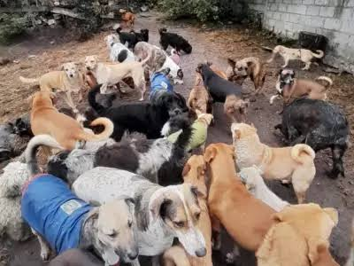
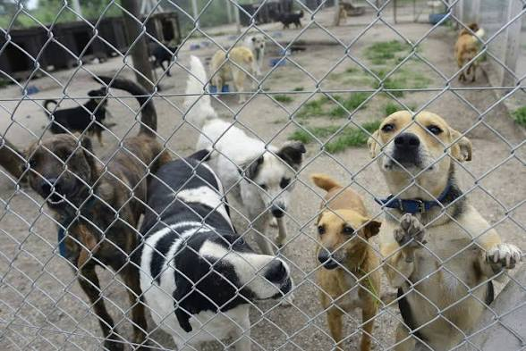
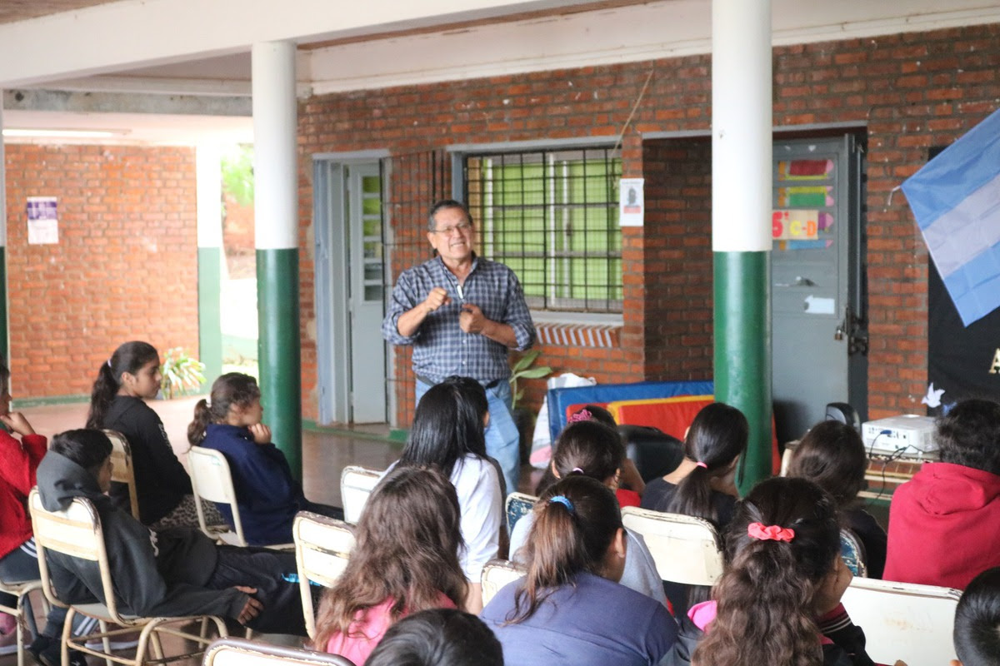

Nuestra Misión
Transformar la vida de los perros abandonados brindándoles salud, amor y un hogar temporal digno, mientras educamos a la comunidad sobre la tenencia responsable y promovemos la adopción como primera opción.


Un lugar donde segundas oportunidades se vuelven realidad.
Somos una organización no gubernamental (ONG) sin fines de lucro, conformada por un grupo de voluntarios apasionados por el bienestar animal. Nos dedicamos al rescate, rehabilitación y reubicación de perros en situaciones de riesgo, abandono o maltrato.
Transformar la vida de los perros abandonados brindándoles salud, amor y un hogar temporal digno, mientras educamos a la comunidad sobre la tenencia responsable y promovemos la adopción como primera opción.
Conoce los pilares que hacen posible nuestra labor diaria:

Atendemos llamados de emergencia, rescatamos perritos de la calle y les brindamos atención veterinaria integral para recuperarlos física y emocionalmente.

Buscamos las familias ideales para nuestros rescatados mediante un proceso de entrevistas, asegurando que cada patita encuentre el hogar que merece.

Realizamos charlas en escuelas y campañas vecinales de concientización sobre castración, vacunación y el fin del maltrato animal.